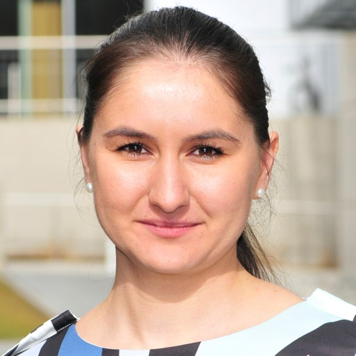

Invited Speakers
E-mail ifalcomata@enforcer.it
E-mail cotroneo@unina.it
E-mail Svetlana.Abramova@uibk.ac.at
 Svetlana Abramova is a Senior Researcher at the Department of Computer Science, University of Innsbruck, Austria. She has received her Ph.D. degree in Computer Science from the University of Innsbruck, Austria (2019) and her Master’s degree in Information Systems from the University of Münster, Germany (2012). Her research interests span empirical and theoretical perspectives on security, privacy, digital currencies, and payment systems, with a strong focus on economic, human, behavioural, and social aspects. She is particularly interested in interdisciplinary and multi-method research, at the frontier between computer science, information systems, economics, and the social sciences. Svetlana regularly serves as an Associate Editor and PC member at the renowned International and European Conferences on Information Systems (ICIS, ECIS) and the Workshop on the Economics of Information Security (WEIS). Prior to her Ph.D. studies, she worked as a senior IT consultant in a management consultancy in Germany.
Session Title: Game theory for cyber security and privacy
Abstract: Game theory, the study of conflict situations and strategic decision making, has proved to be a valuable tool in economics, social and political sciences, evolutionary biology, psychology, or computer science. The fundamental concepts, supported by proven mathematics, make game-theoretical approaches of interest in many cyber security and privacy research problems, too. Besides the most obvious attacker-defender scenario, game theory can be applied to study economic incentives in such real-world examples as interdependent security or privacy, collaborative anonymity, or mandatory breach reporting. This session will introduce the basic notions, elements, and solution concepts of game theory, supported by selected canonical games and examples from information security and privacy. In the second part, students will apply the learned game-theoretical apparatus, model a given security problem as a game in group work, and discuss the strengths as well as limitations of game theory.